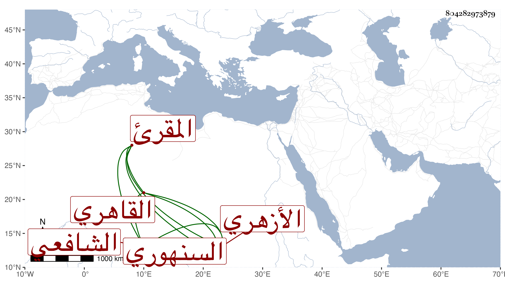

0902Sakhawi.DawLamic.ITO20230111-ara1.EIS1600.804282973879
Biography ID: 804282973879
910
إسماعيل بن أحمد بن يعقوب السنهوري القاهري الأزهري المقرئ الشافعي . اشتغل في القراءات على الشهاب السكندري والتاج بن تمرية والدزوجته الزين طاهر ثم ترك وأم بجامع الأزهر في وقت وقام عليه جماعة في ذلك مع مساعدة بلديه النور السنهوري المالكي محتجا بقدمه واشتغاله في القراءات وكذا أقرأ في مكتب الأيتام به رب الأتراك وقتا وعمل مشيخة سبع الكلوتاتي . مات في ذي القعدة سنة ثمان وثمانين بعد انقطاعه مدة وهو أسن من بلديه المشار إليه بيسير ونعم الرجل رحمه الله .
